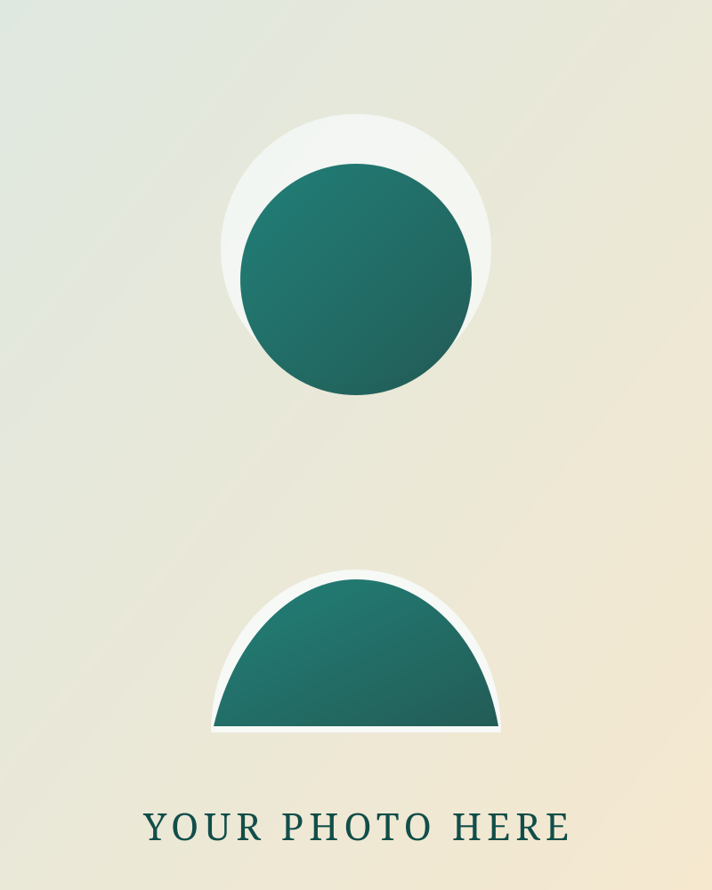

Replace `profile-placeholder.svg` with your own photo later.
Nadav Sellam
Personal website with a clean academic layout: a central biography, quick profile links, and a publication list that stays easy to update as your work evolves.
Bio
I work at the intersection of machine learning, structural biology, and computational modeling, with a focus on building methods that connect experimental observations to richer representations of protein structure and dynamics.
My research interests include inverse problems in biology, generative modeling for protein ensembles, and representation learning for complex molecular systems. I am especially interested in methods that remain grounded in physical measurements while still scaling with modern machine learning tools.
This site is set up as a concise academic homepage: an introduction, external profile links, and a curated publication list. You can replace this placeholder biography with your own text later without changing the layout.
Selected Publications
-
01Inverse problems with experiment-guided AlphaFold Maddipatla SA, Sellam NE, Bojan MI, Vedula S, Schanda P, Marx A, Bronstein AM. ICML 2025.
-
02Generative modeling of protein ensembles guided by crystallographic electron densities Maddipatla SA, Sellam NB, Vedula S, Marx A, Bronstein AM. MLSB 2024.
-
03Experiment-guided AlphaFold3 resolves accurate protein ensembles from sparse chemical shift and cryo-EM data Vedula S, Maddipatla SA, Sellam NB, Rzayev A, Marx A, Schanda P, Bronstein AM.
-
04Representing local protein environments with machine learning force fields Bojan M, Vedula S, Maddipatla SA, Sellam NB, Napoli F, Schanda P, Bronstein AM. 2025.